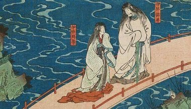

Como quase toda história mitológica, as histórias da mitologia japonesa contam e tentam explicar a criação do mundo,
o surgimento dos deuses e a origem dos imperadores japoneses. As histórias estão em dois livros, um se chama OKOJIKI
e o outro NIHONSHOKI, ainda assim, os dois divergem em vários pontos.
Conta que os deuses haveriam convocado dois seres divinos à existência, um chamado IZANAGI (macho) e outro IZANAMI (fêmea),

e haveriam lhes ordenado para que criassem seus primeiros lares. Deram a eles de presente uma lança decorada com jóias, a lança do céu, ou AMENONUHOKO.
Assim, estas duas divindades seriam a ponte entre terra e céu. Izanagi e Izanami haveriam agitado o mar com a lança do céu e formado assim uma primeira ilha, a ONOGORO-SHIMA.
Haveriam eles descido do céu por uma ponte e morado na ilha, onde tiveram filhos. Estes filhos eram porém imperfeitos, e não eram considerados deuses, eles colocaram os filhos em um barco, o qual foi arrastado pela correnteza.
Tendo sido repreendidos pelos deuses por causa do seu erro, Izanagi e Izanami casaram-se novamente e deste casamento nasceram OHOYASHIMA, ou seja, as oito principais ilhas do Japão.
Segundo o mito, Izanagi e Izanami haveriam gerado ilhas e filhos de sua união, até que Izanami veio a morrer quando deu à luz KAGUTSUCHI, a encarnação do fogo. Este foi, porém, morto pelo pai encolerizado e a partir desta morte surgiram muitas outras divindades.
Alguns matsuri datam de quase mil anos, e é preciso meses e meses de preparação e trabalho árduo para que eles sejam um sucesso. Até pouco tempo, só os moradores locais podiam participar desses festivais, mas os tempos estão definitivamente mudando.
As mulheres nesse festival podem participar de algo mágico. Mil dançarinas com lanternas de papel dourado em suas cabeças se movem com elegância e graça ao som de canções tradicionais. A participação é limitada às mulheres e para participar é obrigatório alugar o figurino.